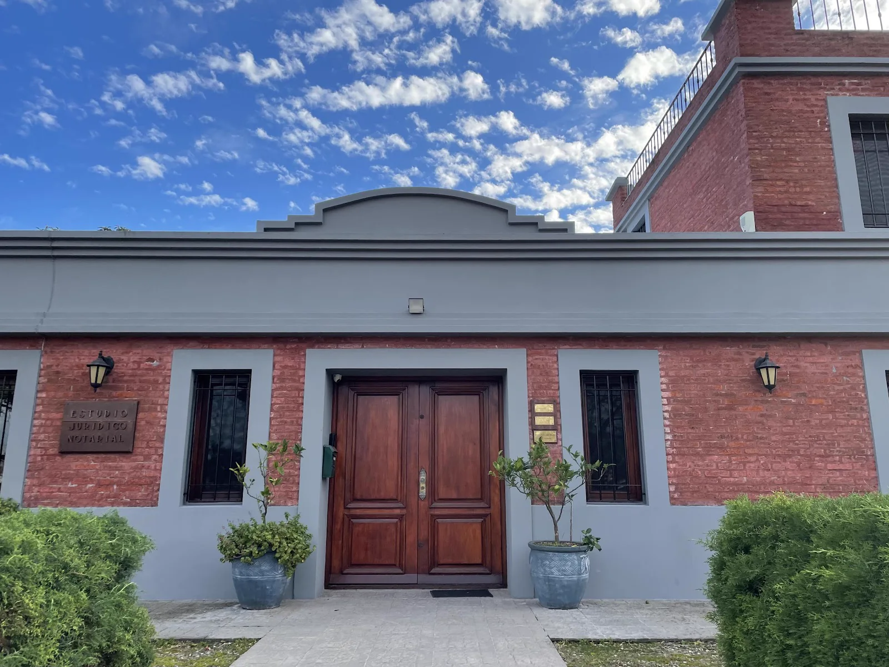

¿Necesitás orientación jurídica clara?
Contanos tu situación y coordiná una consulta.
Llamanos ahora4224 2433 Solicitar consultaMás de 20 años de trayectoria
Asistencia jurídica para particulares y empresas, con atención personalizada y comunicación responsable.
Orientación clara antes de tomar cada decisión.
Acompañamiento profesional durante cada etapa.
Análisis y gestión responsable de cada situación.
Contacto cercano y seguimiento del caso.
Consultas y gestiones legales personales.
Apoyo legal para la actividad empresarial.

Contanos tu situación y coordiná una consulta.
Llamanos ahora4224 2433 Solicitar consultaSituaciones concretas
No necesitás conocer el nombre jurídico del problema. El primer paso es explicar qué ocurrió y qué necesitás resolver.
¿Tu situación no aparece en esta lista?
Contar mi situaciónSobre nosotros
En Cairo Duaso combinamos experiencia, claridad y una atención profundamente humana para acompañar cada situación legal con responsabilidad. Escuchamos, explicamos cada etapa y trabajamos con dedicación para que tomes decisiones con mayor seguridad.
Conocé cómo trabajamosCada situación es única. Te acompañamos de principio a fin.
Explicamos las opciones y los próximos pasos de forma comprensible.
Trabajamos con seriedad, responsabilidad y atención al detalle.
Te acompañamos paso a paso con un enfoque claro y profesional.
Escuchamos tu situación para conocer el punto de partida.
Identificamos la documentación y las opciones disponibles.
Te explicamos con claridad los próximos pasos posibles.
Avanzamos manteniendo una comunicación responsable.
Experiencias reales
Preguntas frecuentes
Información práctica para dar el primer paso con mayor claridad.
¿Tenés otra pregunta? LlamanosPodés llamar al 4224 2433 o utilizar el botón de WhatsApp. Contá brevemente el motivo de tu consulta para facilitar la coordinación.
Depende de cada situación. Al coordinar, indicá brevemente el asunto y el estudio podrá orientarte sobre los documentos necesarios para la primera reunión.
Sí. El estudio brinda asesoramiento y representación tanto para consultas personales como para necesidades de empresas.
Sí, podés consultar por servicios notariales y asesoramiento legal. El estudio confirmará el alcance de la gestión según tu caso.
Luego de revisar la información, el equipo explica las alternativas y acuerda los próximos pasos, manteniendo una comunicación responsable durante la gestión.
En calle 3 de Febrero esquina, Maldonado Centro. En el mapa de la siguiente sección podés consultar la ubicación y abrir las indicaciones para llegar.
Ubicación
Un punto de atención accesible para coordinar tu consulta y acercar la documentación necesaria.